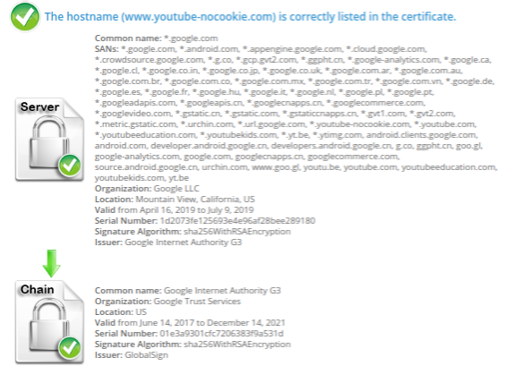

To use, add this to your bookmarks bar:
Getting the "An error occured" message? Try running this fix afterwards:
Here is proof that the domain used, youtube-nocookie.com, is a real legitimate domain from Google. You can check it yourself as well:
